BitMTP：低比特大模型的多 Token 预测与可重放推理
论文：BitMTP: When Multi-Token Prediction Meets Low-Bit Large Language Models
作者：Ning Zhang、Shihao Wang、Jinrui Zhang、Chaodong Xiao、Lei Zhang；香港理工大学计算学系。
公开日期：2026-10-20，arXiv v1；阅读日期：2026-10-22。本文依据完整 16 页原始 PDF，包括附录 A–D；论文首页标注 NeurIPS 2026，会议接收状态未单独核验。
官方代码：PolyU-VCLab/BitMTP。本文实验数字均为作者报告，未在本地复现。
超低比特骨干减少权重存储、内存流量和线性层执行成本，多 token 预测通过并行提出未来 token 减少串行解码步骤；但两者直接结合无法自然得到质量相当的加速：遮罩草稿缺少下一 token 训练中实际存在的中间 token 输入，更宽计算和因果 KV 更新又可能抵消步骤减少带来的节省。
1. 背景和问题
BitMTP 研究的场景是已经采用超低比特权重的大模型生成。模型变小、每次线性计算变便宜之后，逐 token 自回归仍然要求不断启动下一轮计算；另一方面，多 token 预测虽然能在一次前向中提出多个未来 token，却可能把本来很轻的单步推理变成更宽、更复杂的状态更新。论文提出的问题因此非常具体：怎样在已有的低比特推理收益之上继续降低生成成本，同时避免训练输入缺失和运行时状态维护吃掉收益。它并不只是给普通浮点模型加一个预测头，而是要求训练、解码策略、低比特算子和缓存管理一起服从同一个前缀状态契约。
从低比特模型的角度看，BitNet 使用原生低比特训练，Bonsai 使用面向三值权重的量化感知训练，两者来源并不相同。论文在 GPU 解码阶段使用 packed W2A8 线性层：权重以低比特表示存储和计算，激活采用八比特路径。这不意味着整个模型所有张量都只有两比特，也不意味着模型驻留显存等于参数量乘两比特。词嵌入、输出投影、预填充时可能保留的浮点权重、图的静态缓冲和 KV 都仍占显存。附录中的内存表正是为澄清这个区别而必须阅读的证据。把压缩比直接乘到端到端速度或显存上，会丢失论文实际处理的执行约束。
从多 token 预测的角度看，预测块中第二个及后续目标并没有看到前一个真实目标 token。给定锚点后，模型接收到的是遮罩嵌入，而不是逐步补全的真实内容。即使注意力保持因果顺序，它看到的也只是更早的遮罩位置。因此，普通下一 token 训练得到的条件分布不能不经适配就被视为可靠的多步草稿。联合训练保留自回归监督，并额外训练块内因果草稿，使一个骨干同时具备两种执行角色。这里的“单模型”指参数骨干共享；草稿、关键草稿和验证执行角色仍然可以使用不同数值精度的输出投影。
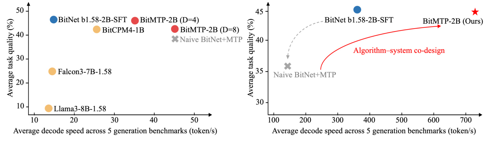
Figure 1 把论证分成两种后端。左侧是 BF16 参考执行，横轴为五个生成任务的平均解码速度，纵轴为平均任务分数；在这个环境中，朴素加入块并行预测看起来能够提高吞吐。右侧改为真正的低比特 W2A8 路径，朴素组合的灰色叉号却位于基线的左下方，意味着吞吐和质量同时受损。这个对照说明方法不能仅凭“每轮预测更多 token”解释有效性：当每个自回归 token 已经足够便宜，块执行、验证与缓存搬移会成为相对更重的负担。红色方法轨迹表达作者通过算法与系统协同重新改善权衡，并不表示曲线上的任何配置都严格保持基线输出或基线分数。尤其要回到主表逐项阅读 BitNet 的结果，因为图中的视觉接近不能代替具体分数差异。两个面板也不能用于估计同一硬件上所有其他模型的公平加速比；部分低比特模型在左侧仍使用 BF16 参考执行，真正的匹配加速需要同骨干、同设备和同后端的 SFT 自回归路径。
还需要理解“已输出”和“已有因果 KV”为什么不是同一件事。块草稿通过遮罩计算得出的候选隐藏状态，并不是把这些候选 token 当成真实输入、沿真实已提交序列算出来的因果状态。即使某些草稿通过置信度规则被输出，也不能立即把其草稿位置的 KV 当成稳定历史。下一轮必须用已提交 token 的真实编号补算相应因果 KV。验证分支则已经用真实候选序列进行过因果前向，可以提升通过验证的对应行进入历史。两种分支留下的待处理后缀长度不同，下一轮输入宽度因而不同，这就是作者所说的接受前缀动态。
这个问题与生成式推荐有自然联系，但目前证据范围仍是文本生成。若推荐输出由多个语义编号或商品 token 构成，批量提出后续位置同样可能降低串行步骤；然而商品合法性、用户偏好条件和列表约束会改变接受率。一个位置置信度高，不代表整条推荐列表在多样性、库存、类目或业务规则上合格。因而本文最适合迁移的是已提交前缀、缓存边界和实际进度的分离思路，不能把文本任务上的速度数字直接写成推荐系统吞吐收益。把这种约束说清楚之后，后续实验才有可判读的含义。
另一个容易忽略的维度是验证器的身份。传统推测解码常把草稿和目标模型作为两个对象，目标模型输出定义质量参照；这里目标角色由同一个适配后骨干承担。训练本身已经可能改变原有自回归能力，所以“保持验证器的贪心延续”和“保持原始模型质量”是两个不同命题。前一个命题可通过逐位置一致性与缓存正确性讨论，后一个只能依赖任务评估和适配控制实验。理解这一层之后，才能解释为什么纯验证方案也可能与 SFT 平均分不同。论文的重要性在于把计算路径和逻辑前缀连接起来，而非承诺所有量化模型都能无代价翻倍。实际研究应同时观测训练引起的骨干变化、接受策略引起的轨迹变化，以及运行时对相同逻辑工作的成本变化，避免用一个吞吐数字遮住三种不同来源。对于推荐应用，还要单列候选合法性和列表级约束的检查成本，因为这些检查未被当前五个文本任务覆盖。
已有推测解码方法提供了不同的加速路径。Medusa 增加多个解码头并通过树注意力验证候选，EAGLE 系列利用目标模型特征建立草稿；这些方法说明减少串行步骤可以有效，但并不自动解决超低比特骨干上的执行成本。论文还讨论 QSpec、ML-SpecQD 与 QuantSpec：它们分别组合不同量化精度、分层草稿或分层 KV 量化，以降低草稿和内存开销。作者指出，这些量化草稿与验证方案仍可能受顺序提出依赖和反复验证限制。BitMTP 的选择是块并行提出、按需验证与接受前缀对齐共同设计，而非仅把目标模型替换为更低精度。已有注意力核、缓存压缩和请求调度优化同样能减少特定成本，但各自没有单独定义“已输出却尚未形成因果 KV”的跨迭代状态。因此本文关注的是这些机制之间的接口，以及低比特单步变便宜之后仍剩下哪些不可忽略的工作。
2. 方法
2.1 块因果训练与待物化前缀
论文首先定义逻辑状态，再描述训练和解码。一次迭代的状态由已提交前缀、已物化因果 KV 长度和待物化后缀组成，满足原文式一：
符号解释：前缀 $p_i$ 包括提示词与已经输出的 token；$\ell_i$ 是真正可供后续注意力读取的历史长度；$u_i$ 是已输出但尚未生成真实因果 KV 的后缀；$n_i$ 是该后缀长度。预填充建立提示词的因果 KV，而由初始化 logits 产生的 token 尚未被作为输入处理，所以进入待物化后缀。这个不变量比“缓存长度等于输出长度”的简化实现更精确，也是不同解码分支共用运行时的基础。训练块以序列中的一个已观测 token 为锚点，其他输入位置使用遮罩。原文式二可以写为：
符号解释：$s_b$ 是块锚点位置，$D$ 是未来预测宽度，$m_{\mathrm{mask}}$ 为遮罩嵌入，$X_b$ 为块输入，$Y_b$ 为有序目标。块内注意力是因果的，每个预测能看锚点和在其之前的遮罩位置。模型一次得到全部草稿，不能把这种并行解释为顺序地读到了正确中间答案。原文没有宣称用非因果双向块消除所有依赖；它用专门监督适应缺失实际中间 token 的条件。原文式三将自回归损失和多 token 损失按监督目标总数归一：
符号解释：$\mathcal B$ 为训练块集合，$U_b$ 为块内有效监督位置，$\theta$ 为模型参数，$X_{b,1:u}$ 是可见块输入切片，$N_{\mathrm{ar}}$ 与 $N_{\mathrm{mtp}}$ 分别为两类监督目标数量。保留自回归项使同一个模型能够继续顺序生成并承担验证角色；分母说明这不是两个任意均值简单相加，改变块宽也会改变监督计算。训练额外成本因此是真实存在的，附录给出同语料、同步数条件下的计时，不能把框架称作完全免费启用的推理技巧。
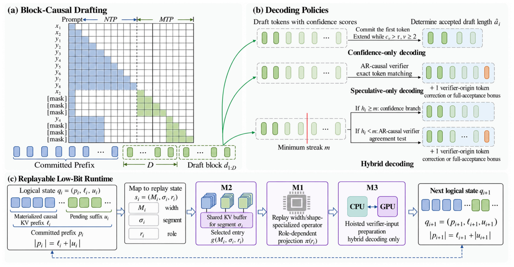
Figure 2 左上把蓝色历史与绿色块输入放在一张注意力矩阵里，蓝色区域保留因果下一 token 监督，绿色区域展示以锚点和遮罩得到的块预测。右上不是三个独立模型，而是三种输出提交规则：只看连续置信度、总做自回归验证、在置信度前缀足够长时跳过验证。橙色 token 表示验证器带来的纠错或额外奖励 token，不能算入被接受草稿的数量。下方状态框明确把历史 KV 和待物化后缀分开，并由宽度、容量分段、执行角色选择图。沿虚线循环看，输出多了几个 token 之后，系统仍要在下一轮回到同一个长度不变量；只比较本轮的草稿数会遗漏下一轮补算的工作。这张图的价值在于揭示学习和运行时之间的接口：训练决定草稿是否值得提交，策略决定提交数量与分支，运行时保证这些选择得到合法的因果缓存。三个部分必须联合阅读，不能把状态框误认为可有可无的缓存实现细节。若草稿分支被直接接到已有自回归缓存接口，最容易发生的错误就是将绿色遮罩前向的 KV 当成已确认蓝色历史，这会改变后续条件分布而且未必立刻报错。论文用长度关系与因果掩码约束一起排除这种静默错误。矩阵里的空白也有实际含义：新草稿不能看到未来真实 token，历史与不同块之间的可见性必须服从训练构造。推理时锚点重复仅用于组织固定形状输入，不应让注意力重复消费同一位置。这解释了为什么作者既给出联合损失又在附录详细约束掩码；单有训练目标并不足以保证图回放正确。学习路径解决草稿可用性，状态路径解决已提交内容如何成为合法历史，两者共同约束后续分支。
2.2 连续置信度、逐轮验证与混合提交
只看置信度的解码总是提交第一个草稿，再从第二个位置开始连续检查阈值，遇到首次不够自信便停止，原文式四为：
符号解释：$c_v$ 是第 $v$ 个草稿 token 的 softmax 概率，$\tau$ 是阈值，$h_i$ 是连续可信长度。乘积保证不能跳过中间低置信位置接受后面的孤立高置信 token；第一个 token 无条件提交也意味着该策略没有逐 token 纠错保证。主实验使用阈值零点九，但高置信不等于已经证明与自回归一致，更不等于事实正确。置信度校准和任务分布变化都可能使快分支产生质量损失。总做验证时，同一个模型使用因果掩码处理最后一个已提交 token 与全部草稿，得到比草稿块多一个位置的验证 token。原文式五取最长逐 token 匹配前缀：
符号解释：$d_u$ 是草稿，$\tilde d_u$ 是自回归因果验证结果，$\hat a_i$ 是接受草稿数量，$b_i$ 是首个不匹配处的纠错 token，或全部接受后的奖励 token。输出数量因此为接受数量加一。它保持的是当前联合训练模型及关键数值路径定义的 greedy 延续，不是训练前模型、原始 SFT 检查点或随机采样分布的严格等价。论文使用贪心生成，不能从最长匹配规则推出任意温度采样的无偏性。
混合策略先计算连续置信长度，达到最小长度阈值便直接提交，否则进行上述验证。这使容易预测的片段避免验证前向，难片段仍有纠错机会，但只要存在不验证的分支，就不能继承总验证策略的完整 greedy 等价声明。它在实验里甚至可能比纯置信路径同时更快且更准，因为错误或短草稿的处理改变了后续进度；这需要看实际每轮提交量与运行时成本，不能只根据多出验证计算就断言更慢。两条分支更新状态的原文式六是核心实现约束：
符号解释：$\bar\ell_i$ 为本轮补完旧待物化 token 后的长度，$I_{\mathrm{verify}}$ 指示是否验证，连接号表示序列拼接。快分支留下全部新接受草稿待下一轮补算；验证分支可以把接受草稿的因果 KV 提升到历史，只留下新产生的纠错或奖励 token 待物化。附录还要求草稿重复锚点的原副本在相关查询中隐藏，验证锚点在历史中的副本同样隐藏；填充、遮罩和拒绝草稿绝不写进已提交因果历史。否则长度虽然可能对齐，注意力仍可能重复读取锚点或读到被拒绝内容。
2.3 宽度专用算子、共享 KV 图集合与提前准备
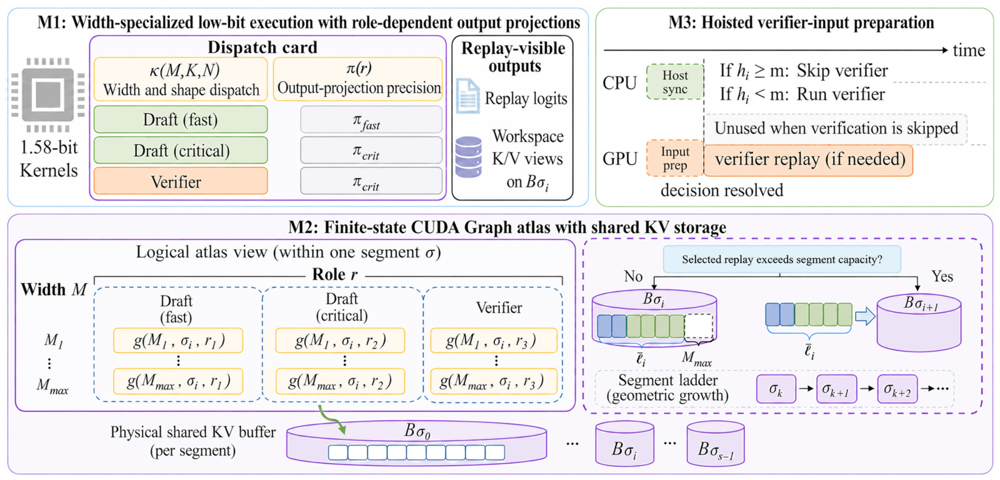
Figure 3 左上显示低比特算子根据回放宽度以及输入输出维度分派，输出投影则额外根据数值角色决定。右上说明混合解码中，GPU 在主机读取置信度并决定分支之前就准备验证输入；若最终走快分支，这次准备结果不使用，但避免了慢分支确定后才开始准备所产生的关键路径等待。下方图区把多个宽度和角色映射到同一容量段的物理 KV 缓冲区，只有超出段容量时才迁移历史。图中的多个捕获图并不意味着每个图都有一套独立完整历史，紫色存储圆柱强调了共享关系。若实现成每次状态切换都拷贝全部历史，即使算子够快也会让长上下文成本重新增长。反过来，共享 KV 只消除了不必要的历史复制，不代表输出投影、每图静态输入、工作区及捕获内存均没有额外成本。因此读这张图时应同时问三个问题：本轮用了哪个宽度的核，哪些 KV 行是合法历史，以及主机分支阻塞了 GPU 的哪段工作。这三个问题分别对应消融中的主要收益和附录中的资源代价。尤其是末尾奖励 token 还没有被作为真实输入处理，不能因为验证器已经输出它就误把其 KV 长度也加一；这是两类边界对齐时容易漏掉的位置偏差。容量段的选择与 token 宽度并非同一维度：前者控制能容纳多长历史，后者控制这一轮固定图计算多少输入。把两者拆开之后，多种宽度可以留在相同历史缓冲上，只在历史真正超过容量时迁移。这样的索引结构也带来捕获集合和静态输入缓冲的管理成本，所以不能以固定形状图为由宣称所有动态状态开销消失。实现仍需正确选择可达图并更新行级边界。M1 的原文式七描述两层分派：
符号解释：$M$ 是回放 token 宽度，$K$ 与 $N$ 是输入输出特征维度，$\mathcal K$ 是所选 packed 核，$r$ 为角色，$\pi$ 为输出投影。H20 的快速草稿角色可用 FP8 投影，关键草稿、自回归与验证使用关键投影。RTX 3090 和 Orin 不支持作者所用 FP8 GEMM 后端，因此使用非 FP8 草稿投影。可见“同一模型”不应被理解为每个分支完全相同的浮点运算；验证语义须绑定关键路径定义。M2 以回放宽度、KV 容量段和数值角色为键捕获有限图集合，原文式八为：
符号解释：$\mathcal M$ 为支持的宽度，$\Sigma$ 为容量段，$\mathcal R$ 为角色，$\mathcal G$ 覆盖实际可达状态。不是把每一种任意长度都重新编译，而是给每种可达待物化长度选择足够宽的固定图，用填充和正确掩码维持形状。容量按几何级数增长时，段数随历史最大长度对数增长，KV 总槽位随历史线性增长。M3 随后把已知验证输入的准备提前入队，减少分支之后的串行开销。它没有消除主机决策，也没有让可选验证变成后台免费计算；收益取决于分支比例、准备代价和执行调度。
3. 实验结果
3.1 H20 主结果：速度与质量须成对阅读
实验覆盖 BitNet b1.58-2B、Bonsai-1.7B 与 Bonsai-4B，生成任务为 GSM8K、MATH-500、IFEval、HumanEval+、MBPP+，分别使用推理精确匹配、严格指令遵循准确率和 EvalPlus 代码 pass@1。所有生成使用贪心解码。报告的吞吐是预填充及请求初始化之后的解码循环输出 token 数除以计时，不包含首 token 前全部成本。五任务平均是不加权任务平均，匹配加速比参照同设备、同低比特后端的 SFT 自回归路径；因此它既不是所有样本合并吞吐，也不是生产负载下并发请求每秒数。
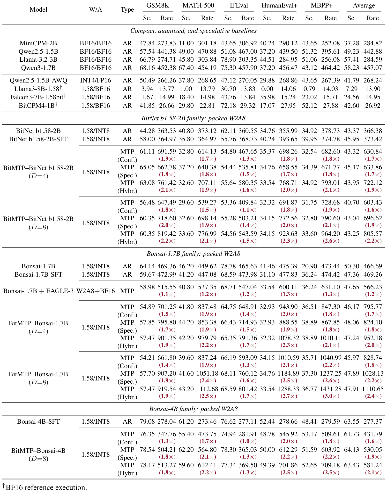
Table 1 中最强的五任务平均加速来自 Bonsai-1.7B、块宽八、混合解码，吞吐为每秒一千一百一十点六五 token，对应 SFT 的四百六十九点二六，约为二点四倍；平均分四十七点九一，对照四十七点三六。Bonsai-4B 的相同策略为五百八十一点二四，对照二百七十七点三七，约二点一倍；质量六十三点四三，对照六十三点五五。这两组较好支持“相近平均质量下加速”。BitNet 则需要更谨慎：块宽八混合解码为八百零五点五七，对照三百七十三点四二，约二点二倍，但平均分从四十五点九五降到四十三点二五，下降二点七个百分点。若质量更重要，块宽四且始终验证得到四十五点一七分和约一点七倍速度，是不同的权衡点。表中多个配置不能合并成一个“全部无损、最高二点四倍”的结论。Bonsai-1.7B 加 EAGLE-3 的平均分四十七点六五、吞吐五百六十六点二三，而 BitMTP 混合方案达到四十七点九一和一千一百一十点六五；这支持作者在此配置下单骨干块草稿比附加 BF16 drafter 更有效，但其他系统使用其发布运行时，仍不能把差距全部归因于某一个算法模块。跨模型质量也并非完全对齐，表格提供的是部署语境中的多目标比较。此外，平均质量差异并不能替代统计显著性检验，论文主表没有列出每个得分的重复实验置信区间。较小的正负波动应当保守描述为相近，而非模型能力确定上升。若比较代码实际通过率，还应观察单任务样本数和评估脚本设置。本文能支持的最稳健结论是这些匹配条件下出现了可观解码加速，并呈现明确的策略选择空间；不同骨干需要分别挑选工作点。
按单任务拆开看，Bonsai-1.7B 的块宽八混合解码在 HumanEval+、MBPP+ 上约有二点七倍与三点零倍速度，在 IFEval 上约一点七倍。作者报告相应代码任务每轮提交约六点七、七点一个 token，而指令任务约四点六个；这直接连接了接受前缀与成本摊销。提出八个位置并不代表每轮平均前进八个，块宽增加也不保证每个任务都同样受益。混合策略在主表的五组骨干与块宽配置上同时超过纯置信策略的平均质量和吞吐，说明纠错有可能通过改善有效进度抵消额外计算。这个现象并不把混合策略变成严格验证策略，它仍然可能直接接受未验证片段。
3.2 消费级与边缘设备：平均和单任务不可互换
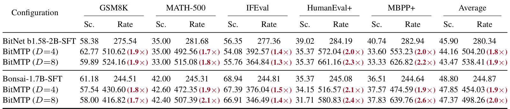
Table 2 延伸到 RTX 3090，块宽八时 BitNet 的平均吞吐从二百八十点三四升至五百三十八点四一，约一点九倍；Bonsai-1.7B 从二百四十四点八七升至四百九十八点二六，约二点零倍。对应平均质量分别为四十三点四七对四十五点九零、四十七点三七对四十八点八零，仍有不同程度下降。这里 H20 的快速 FP8 投影不能直接使用，作者改用非 FP8 草稿投影，所以结果说明机制可以移植到不同后端，并不说明每个后端运行相同数值路径。Bonsai 的 MBPP+ 单任务二点六倍和 IFEval 一点四倍之间的差距，再次说明代码片段较长的可接受前缀有利于摊销。两个平均数差异不能直接作为硬件算力比，因为模型后端、任务质量和执行配置也会变化。阅读这张表应优先在同一骨干的 SFT 与 BitMTP 行之间比较，再考虑各任务是否落在可容忍的质量范围。若业务目标强调严格指令遵循，不能以代码任务的高加速抵消指令任务质量或延迟的变化；论文没有提供此类业务权重下的新综合指标。这里的五任务均值也不是按真实线上请求比例加权。若业务以指令遵循或短答案为主，平均二倍不能作为容量规划的直接输入。需要取得各任务的请求长度、输出长度和接受前缀分布，按目标流量重新计量吞吐及延迟。该表提供了跨硬件有效性的起点，却没有证明高并发调度、请求排队和预填充竞争时仍保持同样加速比例。因此这张跨设备主结果表的意义是检验同类机制在消费级 GPU 上仍能改善持续解码，而非为不同显卡建立统一性能排名。
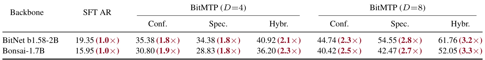
Table 3 只有 MBPP+，没有五任务平均。BitNet 的 SFT 吞吐为每秒十九点三五 token，块宽八混合达到六十一点七六，约三点二倍；Bonsai-1.7B 从十五点九五到五十二点零五，约三点三倍。三种策略在两个块宽上均超过对应自回归基线，混合解码最快。这个结果展示边缘设备上减少迭代和控制状态开销可能更有价值，但不能写成“Orin 所有任务平均三点三倍”，也不能把它与 H20 的二点四倍平均直接排出硬件优劣。设备按 MAXN_SUPER 模式锁定时钟，属于特定功耗和时钟条件；论文没有同时给出能耗每 token 或电池续航比较。该表也只有速度列，不应单凭它宣称边缘端质量完全不变。对持续运行的端侧助手，这组结果值得继续验证；对于短请求、频繁进程启动或内存紧张的部署，还要同时读取冷启动与峰值保留内存证据。把三点三倍理解成持续 MBPP+ 解码循环的局部收益，才符合实验的实际测量范围。还应注意两种骨干的绝对速度和相对倍数排序不同：BitNet 最终绝对吞吐更高，Bonsai 相对自身基线倍数略高。选择部署模型需要同时考虑质量和资源预算，不能只看倍数最大的行。表中对块宽四与八的比较属于同一任务上的配置比较，不足以推出所有文本场景都应使用更宽草稿。随着输出结构变化，额外宽度可能产生更多被丢弃的位置。更高的提出并行度只有转化成更长有效前缀，才会持续产生实际吞吐收益。对端侧评测还应固定散热状态和功耗配置，再测长时间运行是否维持相同频率；该项稳定性并未由这两行吞吐结果单独证明。
3.3 能力保持与运行时消融
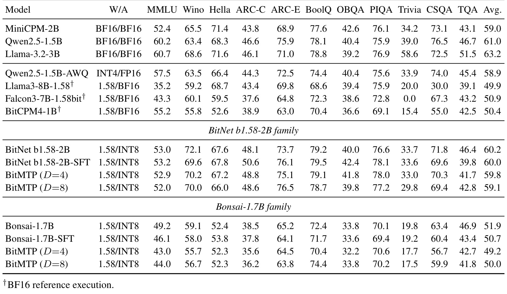
Table 4 评价的对象与主表的块提交策略并不相同。十项任务通过因果似然评分检验适配后骨干，只有 TriviaQA 对生成回答计算精确匹配；作者明确说明似然任务不调用多 token 接受策略。因此 BitNet 在块宽四、八时得到五十九点八和五十九点一，对照 SFT 六十点零，主要说明联合训练之后的能力平均变化，而非证明未验证草稿在所有任务上等价。Bonsai-1.7B 对应四十九点二、五十点零，对照五十点七，平均下降零点七到一点五个百分点。细项还有相反方向：Bonsai 块宽八的 BoolQ 从七十一点七到七十四点四，但 MMLU 和 HellaSwag 下降；BitNet 块宽四在部分常识指标上上升，其他项则回落。论文将这些描述为能力大体保留是有平均证据的，但“逐项无损”没有依据。块宽排序也不统一，BitNet 四更好，Bonsai 八更好，提示训练监督变化与骨干条件存在交互。对复现者而言，这张表要求分别保存适配前后模型以及解码策略设置，避免把骨干能力漂移和推理接受误差混为同一个质量损失来源。它与生成任务表是互补证据，不能相互替代。因果似然测评还不包含块草稿的不确定性累计，不能检验高置信快分支会不会在长输出中逐渐偏离。因此，若要为混合策略给出更强的质量保证，仍需对实际生成轨迹、任务成功率和置信度分段做独立评估。表中的平均接近只回答适配后骨干是否明显丢失某些通用能力；部署策略是否可靠需要另一个针对提交规则的问题定义，二者不宜混为一项验收。任何部署质量门槛都应在真实输出规则下重新测量，尤其需要区分似然排名正确与实际生成内容正确这两种不同评估对象。
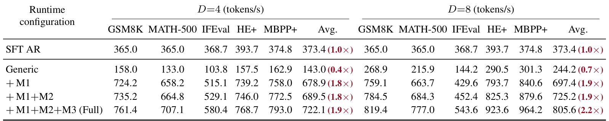
Table 5 最能支持算法与系统必须协同的论点。块宽四时通用运行时平均只有每秒一百四十三点零 token，块宽八为二百四十四点二，都低于三百七十三点四的 SFT 自回归基线。加入 M1 后分别升至六百七十八点九和六百九十七点四，说明宽度专用 packed 执行和角色投影是从亏损走向加速的主要台阶。再加共享 KV 图集合 M2，达到六百八十九点五和七百二十五点二；最后加入提前准备 M3，达到七百二十二点一和八百零五点六。后两者增益较小但真实，块宽八从 M1+M2 到完整系统增长更明显，表明分支等待和准备对更宽块的影响不可忽略。由于这是累积消融，不能将后一行差值当作该模块在任意系统上的独立收益，更不能按倍数相乘得到新配置速度。M1 本身也同时包括算子分派与投影角色，单看此表无法剥离二者各贡献多少。表中不同任务的收益并不均匀，IFEval 虽最终提升到五百四十三点六，仍低于代码任务接近千 token 的吞吐。消融因此支持在真实提交分布下评估每段关键路径，而不是只做一个低比特矩阵核的微基准。将每一行与相同块宽的前一行比较，可以发现运行时设计不仅改变启动次数，还会改变同一逻辑工作在低比特硬件上的执行效率。这个观察对已采用量化的服务尤其重要：在浮点后端有效的并行算法，迁移到低比特后端后可能失去原先的算力瓶颈假设。完整系统超过基线的事实来自这些机制组合，而不是来自“低比特”和“多 token”两个标签的理论叠加。
3.4 附录的训练、拒绝、内存与启动成本
训练数据的附录 Table 6 共计三百五十四万三千九百三十四条处理后样本，来源涵盖 ScaleQuest-Math、SmolTalk、OPC-SFT-Stage2、Tulu-3-SFT-Mixture、SciRIFF、Table-GPT、OpenCodeInstruct 和 Reasoning-SFT-IF，包含数学、通用对话、代码、科学、表格与指令遵循。SFT 和 MTP 使用同一混合语料，这一点减少了主对照中“数据完全不同”带来的混淆；但它也说明适配需要实际训练资源，不能直接在任意未适配模型上复现相同表现。
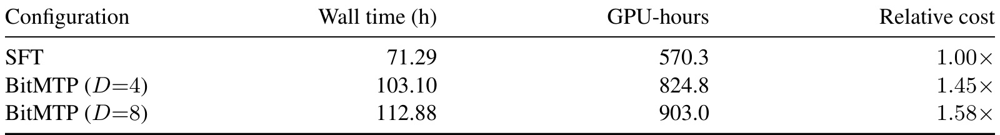
Table 7 固定语料、全局 batch 和优化器步数，在八张 H20 上比较一个 epoch。SFT 用时七十一点二九小时、五百七十点三 GPU 小时；块宽四 BitMTP 用一百零三点一零小时、八百二十四点八 GPU 小时，块宽八为一百一十二点八八小时、九百零三点零 GPU 小时。相对成本分别为一点四五倍和一点五八倍。这些数字刻画了保留自回归监督并增加块监督的开销，避免将推理框架描述成不需要训练投入。它们不意味着所有骨干的训练成本都按同一比例增加，因为这里仅实测 Bonsai-1.7B 的一轮训练。若部署请求量足够大，长期推理节约可能摊销这笔成本，但论文没有给出电费、硬件占用和请求规模构成的经济盈亏平衡点。要比较是否值得适配，应先把完整训练 GPU 小时、模型更新频率以及真实解码时长合并计算，而不能只把每秒 token 提升当成总算力成本同幅下降。对于经常迭代的个性化推荐模型，重复训练的时间预算可能成为比单请求解码更先出现的约束。比较投入时还应说明训练收敛目标是否相同。同一步数能够控制一部分实验条件，但并不自动表示两种目标达到各自最佳质量所需总训练预算相同。原文这张表量化的是规定配置的一轮成本，不是所有可能训练日程的下界，也不是推理速度与训练效率的一体化最优证明。复现时宜保存数据处理版本、有效监督目标数和实际加速器时间，以便理解宽度变化的代价。训练成本与推理收益分开呈现，能够让模型更新频率高、请求量小的应用保留更合理的比较基准。
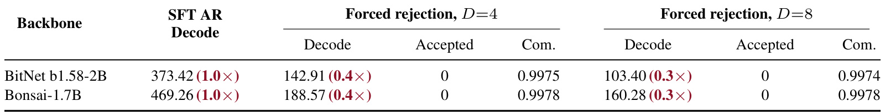
Table 8 强制每轮接受草稿数为零，因而仍支付完整草稿与验证成本，却最多只提交一个验证器来源 token。BitNet 在块宽四、八时吞吐分别是一百四十二点九一和一百零三点四零，对照三百七十三点四二；Bonsai 对应一百八十八点五七和一百六十点二八，对照四百六十九点二六。这个失败条件显示可重放低比特运行时不能创造额外有效进度，接受率极低时算法会明显慢于自回归。块越宽，浪费的草稿工作越多，极端下八比四更差。表中每轮提交均值略小于一而非刚好一，不能拿其小数偏差推断论文没有陈述的统计实现细节；安全解释是最多一个有效验证 token。作者强调持续全拒绝是人工最坏情况，正常负载可能偶发零接受，但 Bonsai 混合负载的平均提交量为四点六至七点一个 token，属于不同工作区间。工程上应把拒绝分布和分位数也记录下来：均值良好仍可能掩盖少量高延迟片段，尤其短输出或分布外请求。本文没有证明自动退回自回归策略的最优阈值，不能把一种合理的后续保护设计说成已实现功能。因此，一项实用诊断不是简单监测模型是否提出了完整草稿，而是统计每次支付宽度计算后真正提交了多少内容，以及慢分支被调用多少次。尤其当用户输入改变、提示模板更新或输出格式收紧时，过去的平均接受长度可能不再成立。论文在这里展示了失败模式，并没有给出覆盖所有负载漂移的保证。对运行时本身，压力测试仍有价值，因为零接受时也必须保持缓存和输出边界合法。
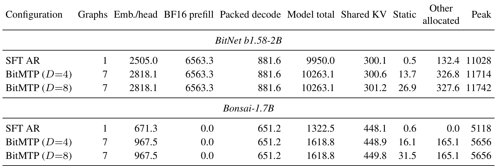
Table 9 在四千零九十六 token 容量段下对比一个图与七个图。BitNet 的共享 KV 从三百点一 MiB 增至三百点六或三百零一点二，Bonsai 从四百四十八点一到四百四十八点九或四百四十九点八，符合多个图复用一份因果历史的设计。与此同时，BitNet 模型总驻留量从九千九百五十点零升到一万零二百六十三点一 MiB，峰值从一万一千零二十八升至一万一千七百一十四或一万一千七百四十二；Bonsai 峰值从五千一百一十八升至五千六百五十六。增加的代价包含输出嵌入、投影、每图静态缓冲和其他分配，不能因为共享 KV 只多一两 MiB 就声称整个框架显存近乎零增加。BitNet 还保留六千五百六十三点三 MiB 的 BF16 预填充权重，Bonsai 这一列为零，直接说明不同骨干的总驻留不能只按三值参数比较。峰值是三次运行各阶段设备最大读数的中位数，与 CUDA allocator 的保留内存也不同口径。对长历史部署，容量段增长的迁移会影响尾部延迟，本文给出复杂度与固定段实测，没有穷尽各种上下文长度和并发请求组合。同样，额外静态缓冲会随图数量和宽度增加，不能将固定四千 token 段下的小额共享历史增长线性外推到任意捕获集合。模型总量一列已经包含 Emb./head，求和时不能再重复相加。把这些列的定义保留到报告中，能避免把权重、历史、工作区以及分配器池重复计算或漏算。真正的容量评估需要与目标并发数和最长上下文共同进行，而本文仅展示单个规定容量段。这些限制不削弱共享历史的机制证据，而是明确该证据只覆盖相应容量和图数量下的内存组织。
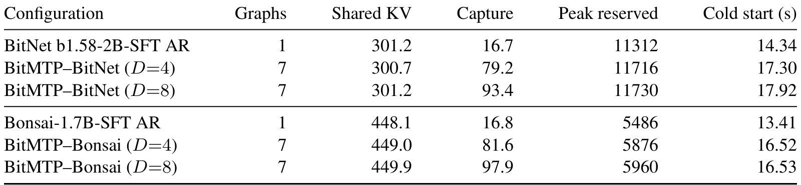
Table 10 把持续吞吐之外的首次请求成本显式列出。BitNet 的冷启动从十四点三四秒增至十七点三零或十七点九二，增加约二点九六至三点五八秒；Bonsai 从十三点四一秒到十六点五二或十六点五三，增加约三点一一至三点一二秒。BitNet 峰值保留内存从一万一千三百一十二到一万一千七百一十六或一万一千七百三十 MiB，Bonsai 从五千四百八十六到五千八百七十六或五千九百六十 MiB。表中的 Capture 是从 KV 分配到可服务状态的分配器增量，不能与模型总驻留或完整峰值互换。作者使用空编译缓存测冷启动，持续常驻进程可以摊销这些一次性支出；频繁重启、按请求拉起或严格内存上限的边缘场景则可能受到实际影响。与 Table 9 的 H20 峰值设备读数相比，这里报告的是首次请求 CUDA allocator 峰值保留内存，口径不可比。把两张表同时保留，才能防止用服务器共享 KV 的优点掩盖端侧启动成本；它也提醒部署验证需要分别计量稳定阶段、首次请求和进程生命周期，而不只报告最快的生成循环。对于一次性命令行调用，启动增加的数秒可能比生成几十个 token 所省时间更大；对常驻服务，同一开销可以被很多请求共享。这是基于计时范围的工程推论，论文没有直接提供不同请求生命周期的完整端到端对照。不能把推论标成作者已经证明的节省，也不能因此否定持续解码结果。两类场景应分别报告首响应时间和稳定吞吐，最终用实际工作负载决定哪一种指标更重要。启动路径因此应作为独立部署指标保存，不能埋入一个未定义请求生命周期的总平均值。
4. 总结
BitMTP 的核心贡献是把块预测的逻辑进度与低比特运行时的真实工作联系起来。联合训练让骨干学会在缺少中间真实 token 的条件下生成草稿，三种策略决定哪些草稿可以输出以及何时验证，前缀对齐再把输出内容转换成合法的因果历史。宽度专用执行处理更宽计算，图集合共享历史避免重复复制，提前准备缩短混合策略的分支关键路径。主文和附录共同支持这条因果链：通用运行时确实可能比自回归更慢，针对低比特的执行机制使其变快，最终速度又受每轮实际提交量约束。
对推荐研究而言，最值得带走的是“提出多少”与“完成多少”必须分开统计。生成式推荐若一次产生多个语义编码，只有合法且最终提交的连续部分才算有效进度。每轮候选计算、约束检查、缓存补算和列表校验都要摊入成本。一个可执行的探索方向是在已量化的生成推荐骨干上，先训练受同一用户条件约束的块草稿和自回归路径，再测商品编码接受长度、候选合法性拒绝比例及用户分群质量。只有这些观测足够稳定，才适合评估共享缓存与有限图集合是否能减少服务时间。这是基于论文机制提出的迁移设想，当前论文没有推荐数据集、点击率、转化率或线上用户实验，相关收益属于数据未验证。
应优先防范三类风险。质量风险来自快分支未验证提交和联合训练后的骨干漂移，特别是 BitNet 块宽八混合方案相对 SFT 平均分已有明显回落；因此应同时保留纯验证路径和严格质量参照。负载风险来自接受率变化，全拒绝压力测试显示即使完整优化也可能低于自回归，短请求和分布外任务尤其需要观测尾部。资源风险来自额外训练、输出投影与图缓冲、首次请求内存和冷启动，不能用共享 KV 增量小来代替整体资源评估。还有更广的适用范围限制：模型规模只到四十亿参数，设备都属于 NVIDIA 路径，主结果是 greedy 文本任务，尚未覆盖任意采样、复杂多请求调度和所有长上下文场景。
后续跟进可以围绕四件具体事情展开。首先，用相同检查点逐 token 对照纯验证输出与自回归输出，在全接受、首位拒绝、部分接受、容量增长和 EOS 边界下检查 KV 不变量；这能区分实现错误与模型质量差异。其次，按任务和输出长度记录置信前缀、接受前缀、验证比例和每轮提交分布，再评估块宽及阈值的权衡，不能仅靠总体均值选配置。第三，将预填充、初始化、图捕获、稳定解码和并发排队一起计量，分别报告首响应、总时延、吞吐与峰值内存。第四，核对官方实现的数值投影、宽度分派与捕获集合，尝试在目标硬件上复现消融顺序，再将相同逻辑迁移到推荐输出。
这篇工作因此更适合作为量化之后继续优化生成链路的系统论文来读。它展示了算法和运行时可以共同改善低比特生成，但质量相近需要落到具体骨干与策略，等价需要落到具体验证器和贪心定义，速度需要落到具体硬件、任务集合和计时边界。满足这些条件之后，二倍左右的平均持续解码收益具有清楚证据；超出这些条件的推广则应继续实验，而不是把最高单任务数字当成默认部署承诺。